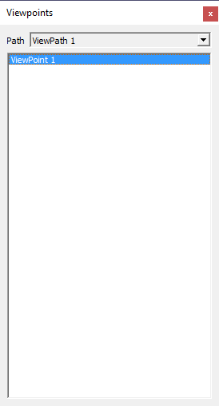
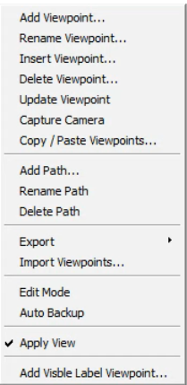
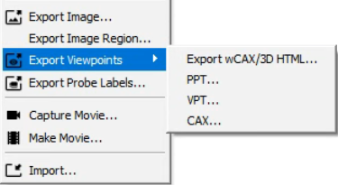
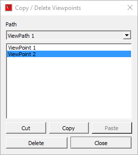

Viewpoints¶
VCollab Pro has an option for creating viewpoints. The first user defined viewpoint will be the default viewpoint, when the model is loaded. User can export and import vpt files. vpt file consists of all viewpoints of a user specified viewpath. Extension of vpt files is .vpt
A view point state may contain
Notes
Annotation
Display mode
Probed CAE result labels
Pick and move part state
Exploded view
Measurements
Cut section
CAE result information.
Merged dataset view.
Benefits
User can store different types of observations on model as view point states.
User can retrieve all observations in a view point states.
Animate path or a walk through model helps user to get more knowledge on model.
Note: Default view paths with default viewpoint states are,
Standard Views
These viewpoints are not stored in CAX file.
All standard views front, back, left, right, top, bottom and isometric views are generated by default.
User can add, and update viewpoints using Capture Camera option in context menu.
But viewing position and orientation only will be saved, not other states.
These viewpoints can be saved through profile, Not in CAX file.
Viewpoints Panel

Add… |
Allows user to add a viewpoint. |
Rename… |
Allows user to rename a selected viewpoint. |
Insert.. |
Allows user to create and insert a viewpoint. |
Delete |
Allows user to delete the selected viewpoint. |
Update |
Allows user to update current scene to the selected viewpoint. |
Add Path… |
Allows user to a new viewpath. |
Context Menu

Add Viewpoint… |
Adds current view to current path. |
Rename Viewpoint… |
Allows user to rename the current viewpoint. |
Insert Viewpoint… |
Inserts a new viewpoint just below the current viewpoint. |
Delete Viewpoint |
Deletes selected/current viewpoint. |
Update Viewpoint |
Updates selected/current viewpoint with current scene states. |
Capture Camera |
Captures current camera properties and save it as a viewpoint. Other states will not be stored and applied. |
Copy / Paste Viewpoints |
Allows user to copy viewpoints from one viewpath to another viewpath. |
Add Path |
Adds new viewpath. |
Rename path |
Allows user to rename the viewpath. |
Delete path |
Deletes current path. |
Export |
Exports all viewpoints into PPT slides / VPT file/wCAX / 3D HTML File. VPT file can be imported later for relevant CAX file. wCAX can be viewed in web browser |
Import Viewpoints… |
Imports viewpoints from external vpt or cax file. |
Edit Mode |
Selecting a viewpoint clears current view information. Accidental selection of viewpoint may result into users loss on current scene information. This will prompt user before applying the new viewpoint to scene. This helps user to avoid current view information loss. |
Auto Backup |
This option helps user to have a back up of viewpoints during creating or updating viewpoints. If user forgets to save viewpoints into cax, user can retrieve the viewpoints created using this option. A vpt file with cax file name will be created and updated. File will be available in %VCOLLAB_TEMP%VCollab. |
Apply View |
Skips applying view/orientation if this flag is unchecked. Flag is checked by default. |
Add Visible Label Viewpoint… |
This is applicable only if the selected viewpoint contains CAE probed labels. In the selected viewpoint, labels of which attached positions are not visible in the current view are suppressed. And the suppressed labels are taken to new viewpoint. User has to provide viewpoint name.
|
How to create view point states?
Load a cax Model.
Add notes through ‘Add Notes’ option
Select ‘Dockable Widgets | Viewpoints | Viewpoints List…’ option in the viewer context menu.
Right click on the ‘ Viewpoints’ panel.
It pops up context menu.
Click ‘Add View Point’ which pops up ‘Add View Path’ Dialog if no view path exists.
Enter a Path name, say Path1.
Click ‘OK’. It pops up ‘Add View Point’ dialog.
Enter a view point name, say ViewPoint-01.
The current view with the Notes will be stored in the name ViewPoint-01. Path name and view point name will be displayed.
Follow the above steps to create more view points with different states.
How to retrieve a view point state?
Open viewer context menu by right click inside viewer.
Click on ‘Dockable Widgets | Viewpoints | Viewpoints List…’ option.
Click on a view point and notice that stored viewpoint state is retrieved and applied on viewer.
How to navigate viewpoints?
User can navigate viewpoints in three ways.
Using Viewpoints panel,
Click on a viewpoint in the list and view,
Click next viewpoint.
Using Navigation icons located at rightmost bottom corner of the viewer window.,
Click Previous and Next icons available inside the viewer to view slides or viewpoints.
How to export all viewpoint states as images into PowerPoint?
Click drop down icon in the File toolbar.
Click Export Viewpoints in the drop down context menu.
Or Click File | Export | Viewpoints… option.

It pops up save file browser dialog.
Enter a file name.
Click Save, which pops up a dialog.
It asks for template.
Click Yes to provide a template.
Click No to continue without template.
Now all the viewpoint states are inserted as images into Power Point.
First slide is left as empty page for title of the presentation if template is provided as shown below.
How to export and import viewpoints?
Click drop down icon in the File toolbar.
Click Export Viewpoints in the drop down context menu.
Or Click File | Export | Viewpoints… option.
It pops up file browser dialog.
Select file type as .vpt to store viewpoints.
Click Save.
Click Import… option from the context menu.
It pops up file browser dialog.
Select any .cax or .vpt file to import view points.
Click Open and notice that view paths are imported.
VCollab supports to import python script also.
How to copy / paste / delete viewpoints?
Click ‘Copy / Paste Viewpoints…’ option in the panel context menu.
A dialog pops up with view path and viewpoints.

Select multiple Viewpoints.
Click ‘Delete’ button to delete viewpoints.
Click ‘Copy’ or ‘Cut’ button to copy the viewpoints to memory.
Select any other user defined view path.
Click ‘Paste’ button to paste the copied viewpoints in the memory.
Click ‘Close’ to close the window.